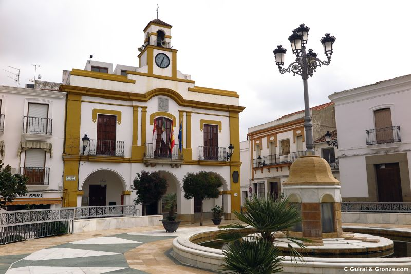

Campanario
Al este de la provincia de Badajoz, en el corazón de La Serena,
en un paisaje propio de la penillanura extremeña atravesado por el rio Zújar,
se encuentra nuestra amable localidad de Campanario.
Situada a camino entre Villanueva de la Serena y Castuera, colindando con
poblaciones como Quintana de la Serena, La Coronada, Orellana y Castuera.
El núcleo es de origen romano, y perteneció, después de la reconquista,
a la Orden de Alcántara, teniendo bajo su dependencia como aldeas a Quintana y a La Guarda.
Integrado asimismo en la Real Dehesa de La Serena.

En los alrededores de la población se han encontrado algunos restos romanos,
como la lápida que, de acuerdo con la tradición, ocultaba la imagen de la patrona de la localidad,
Nuestra Señora de Piedraescrita, que se custodia en el santuario del mismo nombre.
Su caserío, compuesto por edificaciones de mampostería encalada con acusados componentes de granito en las fachadas,
resulta abundante en blasones nobiliarios que ponen de manifiesto la carga histórica de la localidad.
A Campanario pertenece la Aldea de La Guarda que se encuentra a 15 km de distancia.